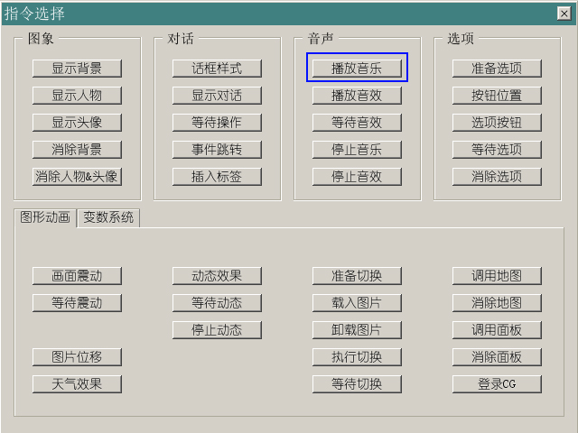
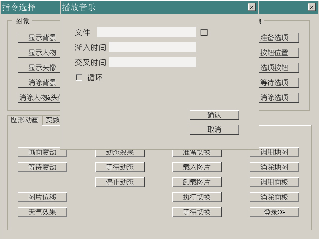

还是老样子，增加一个新的指令。
点下之后出现具体的参数填写窗口。

播放音效的指令按钮就在播放音乐下面，应该不至于找不到吧~
具体参数界面如上。
需要说明的是音效的“编号”这个属性。
音效的“编号”其实和图片的“图层”是类似的，在停止音效的时候，只要指定相同的编号，对应的音效就会停下来。
同时不同编号的音效也是独立的，例如你可以让0号音效播放树叶的沙沙声（循环），1号播放鸟叫声（循环），2号播放知了叫声（不循环）。
游戏中有时候会用到一些演出效果，例如“播放一段音效，等待音效放完之后再继续剧情”。
这种情况下就要用到“等待音效”指令了。指定编号之后，游戏就会在这个地方暂停，直到音效播放完毕再继续执行下一条指令。
在什么地方插入“等待音效”指令其实是很重要的。特别是在快进的时候，假如不在适当的地方终止长音效的播放，这个音效可能在场景切换过后好久还在响。
因此推荐是在播放音效几句话之后插入这个指令。
“等待音效”这个指令默认是“无视快进”的，也就是说当快进时，音效也不会被切掉。假如希望制作出更流畅的快进效果的话，可以勾选“可略过”这个选项。
这样在快进时，假如音效来不及播放完毕，就会被直接切掉。
之前见过不少同学问，“能不能制作配音版游戏？”“没有看到播放语音的指令，怎么播放语音呢？”
其实，语音文件它就是个音效，最简单的方式，使用“播放音效”就可以放了。
使用“播放音效”指令来播放语音的时候，最好统一指定编号，例如系统音效用编号0，语音用编号1，这样比较好管理。
但假如需要更复杂一点的功能的话，请继续往下看。
NVL内建了“在历史记录里进行回顾”这个比较常见的功能，但并没有放在界面上。
在输入对话的同时，可以插入类似这样的指令来播放语音。
[vo storage="voice_001"]
今天天气真好。
[endvo]
这样当游戏进行时，会在显示“今天天气真好。”的同时播放voice_001这个语音文件。
而在对话回顾界面时，点击“今天天气真好。”这行对话，也会把voice_001再播放一次。
3.55以上版本（不含3.55）的模板工程内加入了音效、语音音量分别调整的功能。
旧版工程打开时将不会显示此设置。要让旧版工程也具备调整语音音量功能，请用新模板以下文件覆盖旧工程内的同名文件。